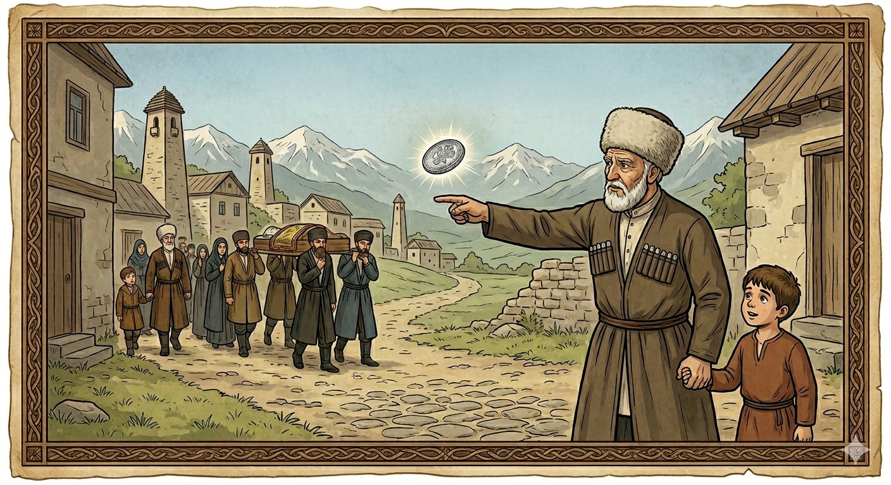

И.А. Дахкильгов. Хьехаме дувцарш - поучительные рассказы-притчи.
И.А. Дахкильгов. Хьехаме дувцарш - поучительные рассказы-притчи. Из ингушского фольклора.

Вай сом да дахьаш
Юрта гӀолла водаш хиннача цхьан къонахчоаи цун кӀаьнкаи тӀанийсавеннав нахаца довнаш дахара тӀера волаш хинна цхьа саг. Акхарна чугӀертав из. КӀаьнкаца воагӀаш хинна къонах маьршагӀа мел лув, вож геттар чухьара вувлаш хиннав. ТӀаккха маьрша воагӀаш хиннача цу къонахчоа ласттабаь наькха юкъе бий балтаб цо. ХӀаьта маьршача къонахчо кисара хьа а даьккха сом деннад цу эгӀора. КӀаьнко хаьттад ший даьга, хӀама хьатехача, сом дӀакховдадар фуд хьа, аьнна. Дас хӀама аьннадац. Цхьа ши-кхо бутт баьннача гӀолла, хьогга санна даи кӀаьнкеи болхаш, дакъа дахьаш боагӀа нах кхийттаб царех. Венна вахьар хиннав хьогга хӀама теха а цу тӀагӀолла сом кара кхаьча а хинна саг. Цун валар мишта хиннад аьлча, хьогга шийна сом даларах кхы а майргӀа а ваьнна, наха кач аха волавеннав из къонах. Вахеи-валеи саг вуташ хиннавац цо. Иштта лелаш, цхьан Ӏовдала тӀанийсавеннав из а. ХӀаьта вокхо техха вийна Ӏовилав. Дас аьннад ший кӀаьнкага, цу дакъана тӀа а хьукхаш: - Вай сом да хьона дӀа-а дахьашдар.
РУССКИЙ
Несут наш рубль
Шел по селу мужчина со своим сыночком. Повстречался им какой-то задиристый драчун. Прицепился он к мужчине с ребенком. Чем более дружелюбно вел себя мужчина, тем более распалялся драчун. Наконец, он дошел до того, что наотмашь ударил в грудь этого мирного мужчину. А тот, как ни странно, достал из кармана рубль и протянул его драчуну. Взяв рубль, он удалился, а мальчик спросил отца, почему он в ответ на удар не ответил ударом, а дал рубль. Отец промолчал. Прошло несколько месяцев. Идут те же мужчина и мальчик. Увидели они людей, несущих покойника. Им, оказывается, был тот самый драчун. После получения рубля он вконец охамел, стал драться со всеми и, наконец, наткнулся на какого-то ненормального, который, недолго думая, убил его. Отец указал на покойника и сказал мальчику: “Смотри, во-он несут наш рубль”.
ENGLISH
НОХЧИЙН
ПОГОВОРКИ